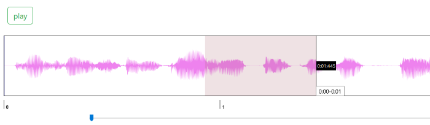

3. Drag sections in waveform box to create "Regions".

a. Click in the created region to play that particular part.
b. shift + click in case (a) does not work.
4.Click on each phoneme in Sym coloumn of the table and observe its respective region in the waveform box.
5. Drag the slider to the right to ZOOM IN and observe the region properly.